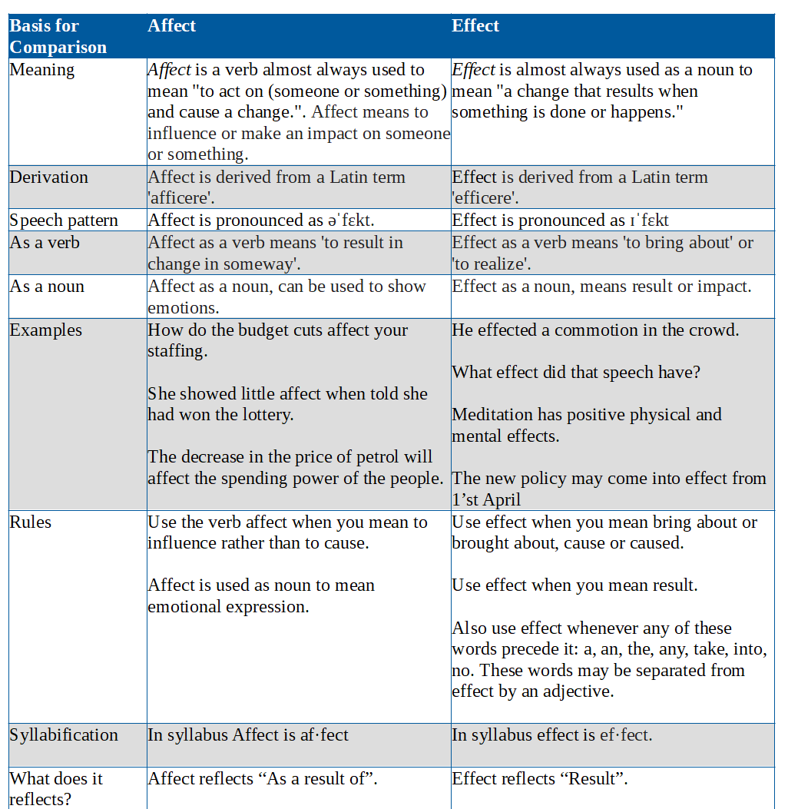

What is the main difference between affect and effect?
The main difference between affect and effect is we use the verb affect when we mean to influence rather than to cause whereas we use effect when we mean bring about or brought about, cause or caused.
Two words that sound very similar and which are frequently mixedup. To add to the confusion, the noun which relates to the mainmeaning of affect is effect.
| Basis for Comparison | Affect | Effect |
| Meaning | Affect is a verb almost always used to mean "to act on (someone or something) and cause a change.". Affect means to influence or make an impact on someone or something. | Effect is almost always used as a noun to mean "a change that results when something is done or happens." |
| Derivation | Affect is derived from a Latin term 'afficere'. | Effect is derived from a Latin term 'efficere'. |
| Speech pattern | Affect is pronounced as əˈfɛkt. | Effect is pronounced as ɪˈfɛkt |
| As a verb | Affect as a verb means 'to result in change in someway'. | Effect as a verb means 'to bring about' or 'to realize'. |
| As a noun | Affect as a noun, can be used to show emotions. | Effect as a noun, means result or impact. |
| Examples | How do the budget cuts affect your staffing. She showed little affect when told she had won the lottery. The decrease in the price of petrol will affect the spending power of the people. |
He effected a commotion in the crowd. What effect did that speech have? Meditation has positive physical and mental effects. The new policy may come into effect from 1’st April |
| Rules | Use the verb affect when you mean to influence rather than to cause. Affect is used as noun to mean emotional expression. |
Use effect when you mean bring about or brought about, cause or caused. Use effect when you mean result. Also use effect whenever any of these words precede it: a, an, the, any, take, into, no. These words may be separated from effect by an adjective. |
| Syllabification | In syllabus Affect is af·fect | In syllabus effect is ef·fect. |
| What does it reflects? | Affect reflects “As a result of”. | Effect reflects “Result”. |
Difference Between Affect and Effect(Affect vs Effect) on the basis of Meaning
Affect is a verb almost always used to mean "to act on (someone or something) and cause a change.". Affect means to influence or make an impact on someone or something whereas Effect is almost always used as a noun to mean "a change that results when something is done or happens."
Difference Between Affect and Effect(Affect vs Effect) on the basis of Speech Pattern
Affect is pronounced as əˈfɛkt whereas Effect is pronounced as ɪˈfɛkt.
Affect
Affect is a verb almost always used to mean "to act on (someone or something) and cause a change.". Affect means to influence or make an impact on someone or something. Affect is derived from a Latin term afficere. Affect is pronounced as əˈfɛkt. Affect as a verb means 'to result in change in someway'. Affect as a noun, can be used to show emotions. Use the verb affect when you mean to influence rather than to cause. Affect is used as noun to mean emotional expression. In syllabus Affect is af·fect. Affect reflects As a result of.
Effect
Effect is almost always used as a noun to mean "a change that results when something is done or happens." Effect is derived from a Latin term efficere. Effect is pronounced as ɪˈfɛkt. Effect as a verb means 'to bring about' or 'to realize'. Effect as a noun, means result or impact. He effected a commotion in the crowd. What effect did that speech have? Use effect when you mean result. Also use effect whenever any of these words precede it: a, an, the, any, take, into, no. These words may be separated from effect by an adjective. In syllabus effect is ef·fect. Effect reflects Result.
Affect or Effect, Which to choose?
Affect is the more common of the two verbs, so thechances are that it will be the right word if you are looking for averb. However, if your sentence contains a word like 'change','transformation', 'improvement' then it is likely to be preceded byeffect, i.e. 'bring about'. When it’s the noun you want, effect will almostcertainly be right (since the rarely found affect has the specialist,psychological sense of 'emotion' or 'desire'). But knowing whetheryou are looking for noun or verb depends on knowing parts ofspeech . . . There’s no shortcut here.